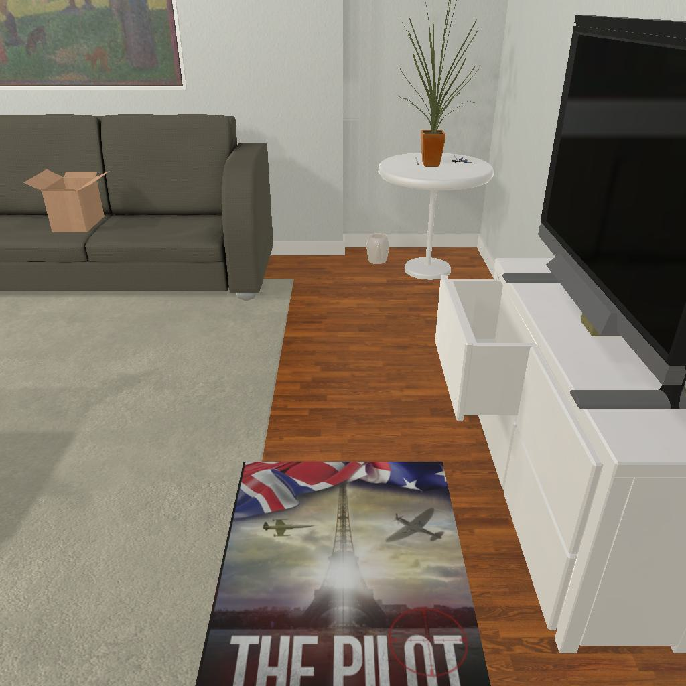

---------------------------------------------------------task: 5---------------------------------------------------------
--------------------------------------------------------------------------------------------------------------------------------------------------------------------
--------------------------------------------------------------------------------------------------------------------------------------------------------------------
Step:--------------------------------------------------------------------------8-------------------------------------------------------------------------------
----------------------------------------
VLM Prompt:
Image1:
**Instruction**
1. Analyze the provided image to identify all visible household objects, focusing on those relevant to the task description "put a book in armchair."
2. Use the analysis of the image and the task hint "The agent must find an object of the desired type, pick it up, find the correct location to place it, and put it down there." to answer the question: what is the most reasonable action in the choices for the task description "put a book in armchair"?
4. Decide and write the answer using the template: The answer is: (i): , where i is the real number. If there is no desired object in the image, search every place based on **Initial Observation** to find the object. And if no one is exactly correct, choose a similar answer.
**Initial Observation**
You are in the middle of a room. Looking quickly around you, you can see armchair (1), sofa (1), coffeetable (1), drawer (1-4), sidetable (1-3), dresser (1)
**Answer Choices**
(1): go to armchair 1
(2): go to sofa 1
(3): go to coffeetable 1
(4): go to sidetable 1
(5): go to dresser 1
(6): go to drawer 2
(7): go to sidetable 2
(8): go to sidetable 3
(9): open drawer 4
(10): close drawer 4
(11): put book 1 in/on drawer 4
(12): examine book 1
(13): examine drawer 4
**Answer**
Let's think step by step by following the instructions.
----------------------------------------
----------------------------------------
Original Response:
First, we need to analyze the image provided. In the image, there is no visible armchair, but there is a sofa, a side table with a plant on it, a coffee table, and a TV stand. There are no books visible in the image. Therefore, we need to search for a book based on the initial observation.
According to the initial observation, we have several locations where a book might be found: a drawer, a dresser, or a side table. The task requires us to "put a book in armchair," which means we first need to find a book.
From the answer choices provided, the actions that involve searching for an object are going to the different pieces of furniture or opening a drawer. Since we do not see any book on the visible side table, sofa, or coffee table, we can rule out options 1 to 4. The dresser is not visible in the image, which leaves us with the drawers as a potential place to find a book.
Option 9, "open drawer 4," seems like the most reasonable next action, as it involves searching for an object (a book) which may be inside the drawer.
The answer is: (9): open drawer 4.
----------------------------------------
----------------------------------------
>>> Refine Original VLM Response and Get Pure Action: open drawer 4
----------------------------------------
-----------------------------------------------------------------
Running time: 10.791352987289429 seconds
Total Money: 1.50365
-----------------------------------------------------------------
-----------------------------------------------------------------
Text Observation:You open the drawer 4. The drawer 4 is open. In it, you see a television 1, a box 1, a houseplant 1, a wateringcan 1, a tissuebox 1, a keychain 1, a remotecontrol 1, a pencil 1, and a pencil 2.
-----------------------------------------------------------------
UNSUCCEED